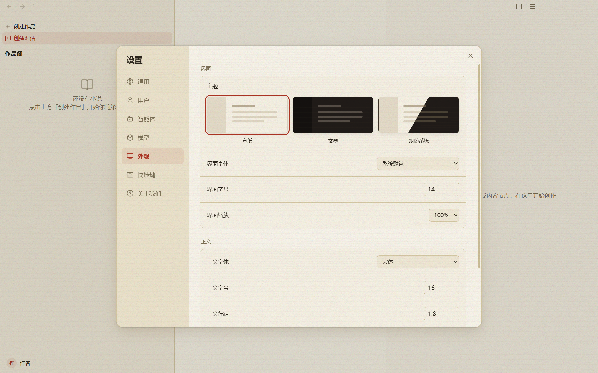

比首版加深 2 个百分点，无背景虚化。手工第二层仍使用轻遮罩，局部叠加最多为 19%。
玄印写作 · UI 审核稿第二版 · 2026-10-12
背景清晰，对话框轻轻浮起
对话框打开后，背景只轻微加深，文字与边缘保持清晰；面板周围保留一圈柔和阴影。

时期设置
时期详情
此处只展示侧边详情框的遮罩、原有细边和轻阴影。内容按真实选中的时期显示。
试验场配置
这部小说还没有角色，先去角色面板建几个。
配置表单的内容来自当前作品；此处只展示局部遮罩与阴影。
宣纸用浅暖色阴影，玄墨用轻黑影。保留原有细描边、底色、布局及尺寸。
通用业务框、设置与引导、嵌套编辑、规划表单和侧详情、向导内详情、试验场配置层。
菜单、下拉候选、工具提示、伏笔浮窗、搜索与导航展开层保持现有样式。
样式参数与证据说明
宣纸：0 12px 32px rgba(96,74,38,.14), 0 2px 8px rgba(96,74,38,.08)
玄墨：0 12px 32px rgba(0,0,0,.28), 0 2px 8px rgba(0,0,0,.18)
设置、用户编辑、快捷键确认、向导及其模板详情与账户菜单来自隔离数据目录内的现有 Windows Electron React 组件；拟议图只临时注入样式。规划与试验场配置场景是纯样式示意，使用相同背景图，不代表实际业务操作或产品验收。全部预览离线，不使用个人数据或模型 Key。
鼠标与键盘可切换主题、场景和对照。样式示意按钮不写入设置或业务数据。审核通过前不实施产品代码，也不运行全量测试。